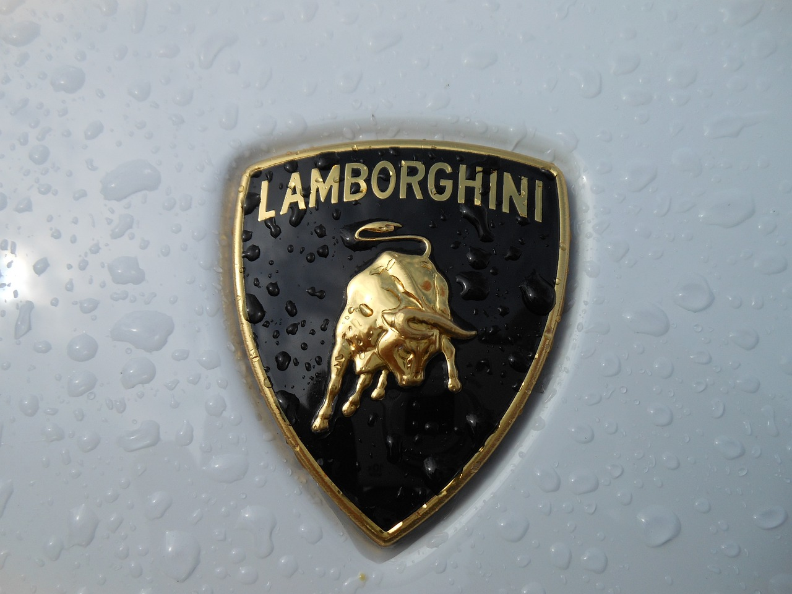
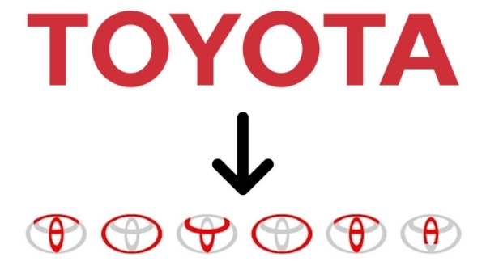
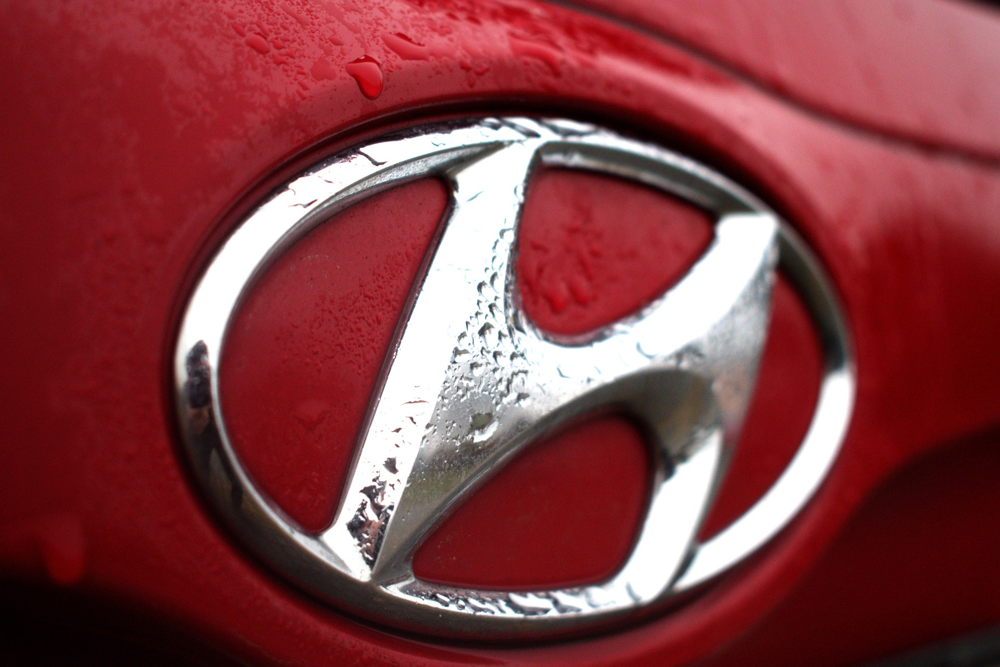
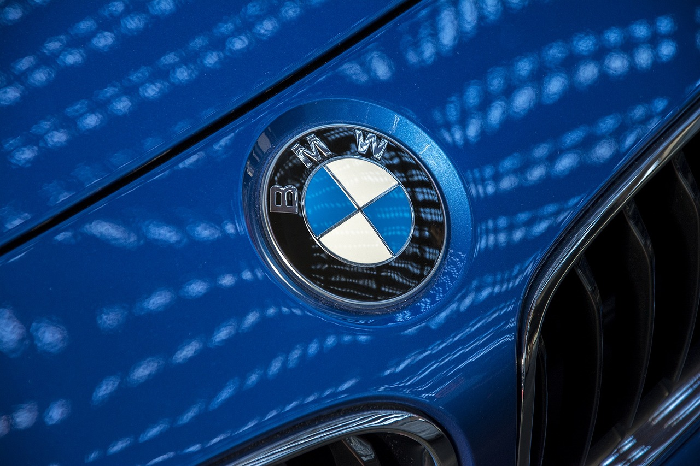

Samochody
Ferrari

Logo producenta pochodzi z emblematu, jaki miał na swoim samolocie włoski pilot z czasów I wojny światowej, Francesco Baracca. Enzo Ferrari, będąc pod wrażeniem jego umiejętności, użył tego samego symbolu czarnego rumaka, stojącego na dwóch tylnych nogach. Taki koń jest uważany we Włoszech za symbol szczęścia.
Lamborghini
Pojawienie się nacierającego byka w logo Lamborghini to zasługa fascynacji walkami byków, a także przyjaźni z ich znanym hodowcą Don Eduardo Miurą. Swoją drogą Ferruccio urodził się jako zodiakalny byk, tak więc pomysł na logo firmy nasunął się sam. Sam znaczek, przez cały okres swojej ponad 50-letniej historii, nie ulegał w zasadzie żadnym modyfikacjom.
Toyota
Przecinające się owale w logo Toyoty symbolizują zaufanie pomiędzy Toyotą a jej klientami. Kształty te tworzą razem literę T. Oba owale przedstawiają serca - Toyoty oraz konsumenta, które łączą się w jedną całość. Ich połączenie symbolizuje wzajemną relację opartą na zaufaniu. Ciekawostką jest to, że w logo Toyoty można znaleźć każdą z liter nazwy marki. Są one połączone w jeden symbol.
Hyundai
Wedle wyjaśnienia firmy, przekrzywione „H” to tak naprawdę dwie osoby, które podają sobie ręce. Ta po lewej (nachylająca się) symbolizuje producenta, ta po prawej (odchylająca się) — klienta. To, co każdy z nas traktował jako literę „H”, tak naprawdę pokazuje relację firmy i kierowcy.
BMW
Biało-niebieska tarcza, czarna obwódka i litery BMW. Od ponad 90 lat to logo symbolizuje czystą radość z jazdy. Jednak jak powstało? Prawdziwe znaczenie logo BMW to jeden z najbardziej kontrowersyjnych tematów wokół bawarskiej marki. Istnieją dwie interpretacje związane z logo BMW. Pierwsza z nich mówi o kręcącym się śmigle, natomiast druga o szachownicy w kolorach Bawarii, czyli regionu, w którym powstają auta BMW. Obecne logo zdaniem marki BMW przedstawia kręcące się śmigło samolotu. Firma wywodzi się od przedsiębiorstwa Rapp-Motorenwerke, które wytwarzało silniki samolotowe. Symbol konia zastąpiono szachownicą Bawarii (oficjalnie - kręcącym się śmigłem), a nazwę Rapp literami BMW